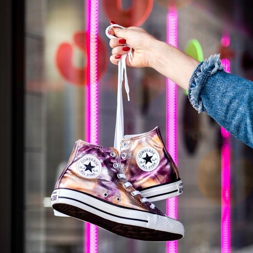
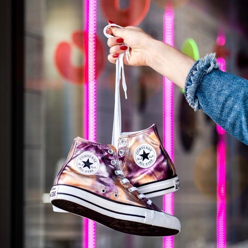

Footwear refers to garments worn on the feet, which typically serves the purpose of protection against adversities of the environment such as wear from ground textures and temperature. Footwear in the manner of shoes therefore primarily serves the purpose to ease locomotion and prevent injuries. Footwear can also be used for fashion and adornment as well as to indicate the status or rank of the person within a social structure. Socks and other hosiery are typically worn additionally between the feet and other footwear for further comfort and relief. Cultures have different customs regarding footwear.
 
